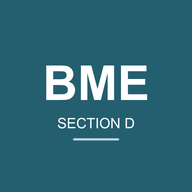

This page needs a connection
This page has not been saved on this device. Reconnect to the internet and try it again.
The BME home page can reopen after an online visit. Supplement pages are saved when you open them online. Drive files, lecture slides and quizzes still need internet access.
Return to BME home